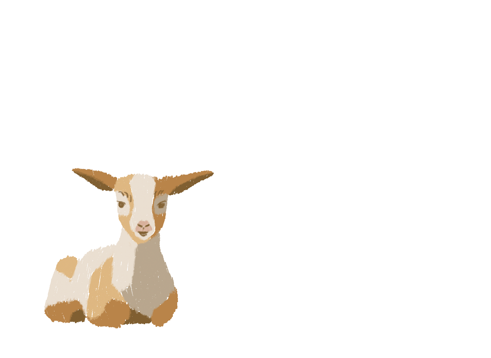
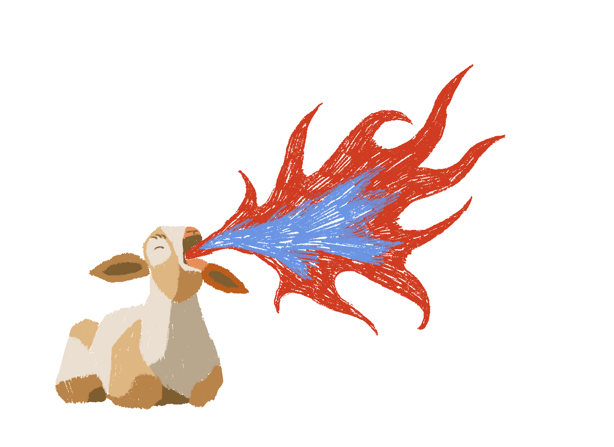

Heran is a writer and producer of fiction, film and new media projects.
Born in Addis Ababa and based in Brooklyn, her creative practice seeks to break through borders real and imagined. She has won an Emmy for The And, a short doc series she produced. Her fiction has been published in Michigan Quarterly Review, Kweli Journal and the Caine Prize Anthology, among others.